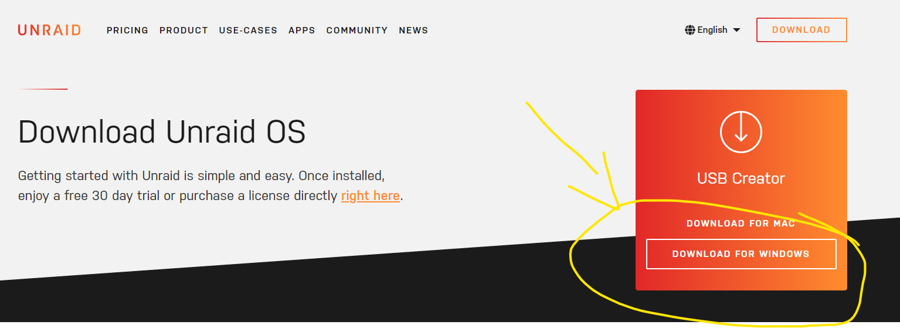
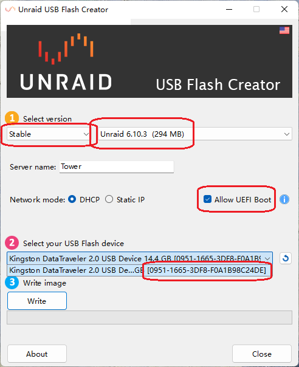
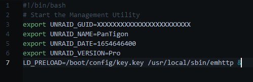

Unraid 6.10.3开心版破解文件
Create At: 2022-10-26 14:19:00网上目前的方式多少有点问题，因为一般提供的下载的文件是带了整个安装包再自己写到优盘的，其实完全没必要。
跟随下面的方法完全无需冒险下载三方文件，都不用自己写盘。
- 去unraid官网下载USB Creator； 
- 插入U盘，打开下载的工具 
- 选择stable → 6.10.3，勾选Allow UEFI Boot，记下2中的你的优盘的GUID；
- 等待下载写入完成后，打开优盘，进入/config目录；
- 下载下面的文件解压后复制进去； Download
- 编辑go 这个文件，替换其中的XXXXXXXXXXXXXXXXXXXXXXXX 为你第三步保存的GUID； 
- 完成。